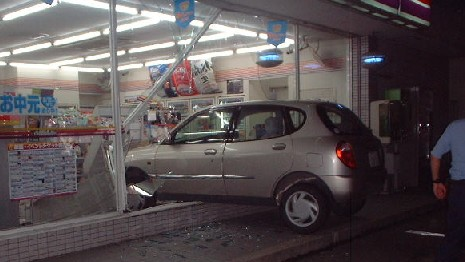
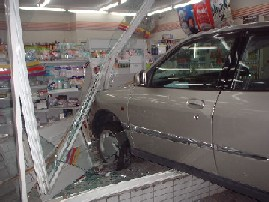
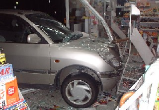
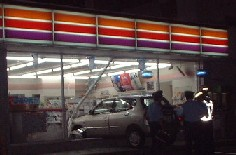
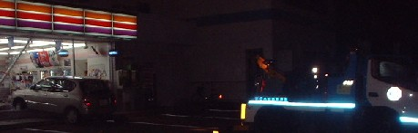
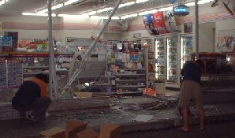

Free talk 雑談。
（９７）事故....
まもなく世界陸上、女子マラソンが始まるという午後１１時過ぎ。日本勢の誰かが優勝するかもしれないというので、パソコンをやりながらテレビを見ていた。すると３男坊が「友達とコンビニへ夜食を買いにゆく」と云いに来た。夏休みで３男坊の友達が２人、遊びに来ていたのだ。「ふん」と返事しただけで、気にもしなかった。
すると１０分ほどたってから、リ〜ンと電話。（こんな夜中に誰じゃいな）と思いつつ電話をとる。すると遊びに来ていた３男坊の友達のＡ君。
「もしもし、○○君のお父さんですか」
「そだよ」
「あの、実はいま....事故やっちゃって....」
「えっ！、車同士か！」
「いえ、あの、コンビニに車、突っ込んじゃって....」
「ケガ人はいるのかっ」
「それが、あの....」
どうもはっきりしない。しかしなんとなくケガ人もいるような感じ。。。誰が運転していたかも分からないが、免許はＡ君しか持っていない。そこでたぶんＡ君とは思ったが、ひょっとして３男坊が無免許運転をした可能性もある。
もう女子マラソンどころではない。なにはともあれ女房と飛び出した。そのとき（どんな問題が持ち上がるかも知れない）と思い、デジカメを持った）。現場につくと、そこにあったのはこんな光景。。。。。



とにかく状況を聞く。するとＡ君がブレーキとアクセルを踏み間違えて突っ込んだという。お客の１人がケガをしたが、幸いかすりキズで済んだらしい（すでに救急車で運ばれていったあと）。店長さんに頭を下げながら、善後策を協議する。すでに警察には連絡済みというので、それを待ちながらレッカー移動のため、ＪＡＦへも連絡（Ａ君は遠方から来ているので、親はすぐここまで来ることは出来ない）。やがて警察も来て検分が始まる。その間、手が空いたので、保険会社との折衝に必要になるかも知れないと思い写真を撮った。
警察の検分も済んだ頃、JAFが到着。レッカーで車を引き出しにかかる。そんな作業の最中にケガをしたお客が診察を終えて、戻ってきた。幸い、なんともないようだ。そこで陳謝しながら、今後のことは、また後日話し合うことにする。
引き出した車はあちこちキズがついていたが、エンジンはかかる。そこでレッカー運搬ではなく、自力で帰宅することにする。しかし車を引きだした後は、こんな状態。↓後片づけが大変だ。そこで子供達に、「綺麗になるまで、みんなも手伝え」と指示した。しかしコンビニ店は、「在庫チェックも同時にやるので」ということで、後片付けはおまかせする事にした。

コンビニ店とも、今後のことは後日打ち合わせすることにして帰宅することにした。しかしＡ君はとても運転する気にならないと云うので、σ（-_-）が運転して帰った。
状況は結構おおごとだったが、幸いにお客さんもかすりキズ程度だったし（それでも書類上では人身になるんだろうな....）、子供にもケガがなかったのが不幸中の幸い。しかし明朝から、あちこち連絡が大変そう....みんなも気を付けようね。。。。。